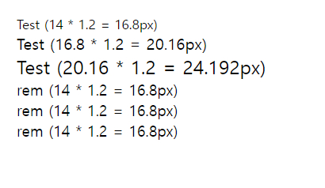

CSS 단위
오늘은 이 CSS를 좀 더 정교하게 만들 수 있는 CSS의 기본이 되는 단위에 대해 낱낱히 파헤쳐 보겠습니다.
| 절대 길이 단위 |
절대 길이 단위는 화면이 어떤 사이즈이던간에 항상 동일한 크기를 지니는 단위값입니다. 그래서 화면 출력보다는 인쇄에 사용할 때 더 유용합니다.단, 반응형을 고려하지 않을시에는 괜찮게 쓰입니다.
■ px
즉, 픽셀이란 하나의 점을 의미합니다.
■ 참고
| 단위 | 이름 | 설명 |
|---|---|---|
| cm | 센티미터 | 1cm = 96px/2.54 |
| mm | 밀리미터 | 1mm = 1/10th of 1cm |
| Q | 4 분의 1 밀리미터 | 1Q = 1/40th of 1cm |
| in | 인치 | 1in = 2.54cm = 96px |
| pc | Picas | 1pc = 1/6th of 1in |
| pt | 포인트 | 1pt = 1/72th of 1in |
| px | 픽셀 | 1px = 1/96th of 1in |
| 상대 길이 단위 |
상대 길이 단위는 상위 요소의 글꼴 크기 또는 뷰포트의 크기와 관련이 있습니다. 이 단위를 사용하게되면
텍스트나 다른 요소의 크기가 페이지의 다른 모든 것들에 영향을 받게 조정됩니다.
가장 핵심인 반응형 웹을 하기에 최적화 되어 있다고 할 수 있습니다.
■ %
■ vh
예를 들어, 브라우저 높이가 900px이라면 1vh는 9px이 됩니다.
■ vw
1vw로 속성값을 설정하면 뷰포트 너비의 1%만큼 계산이 됩니다.
스크린의 너비값에 꽉 차는 헤드라인을 만들고 싶다면 vw를 사용해보세요! 브라우저의 너비에 맞춰서 계속해서 꽉차는 폰트를 유지할 겁니다.
■ em
1em = 부모 엘리먼트의 font size
■ rem
rem은 최상위 엘리먼트의 폰트 사이즈를 기준으로 측정이되는 단위입니다. 보통 최상위 태그는 <html>입니다.
1em = 최상위 엘리먼트의 font size
rem의 경우 em보다 접근성이 더 뛰어납니다.
em과 rem의 차이를 아직도 모르겠어요...🤦♂️
body {
font-size : 14px;
}
div {
font-size : 1.2em;
}
위와 같이 body태그 안에 div가 하나만 있는 html 코드가 있다면 부모의 글자크기가 14px이므로 div의 폰트사이즈는 14px을 기준으로 1.2배가 됩니다. 그러므로, 16.8px이 되는거죠. 그런데 이 div의 자식 요소들이 계속해서 생긴다면 어떤 현상이 일어날까요? 아래를 보시죠
body {
font-size : 14px;
}
div {
font-size : 1.2em;
}
span {
font-size: 1.2rem;
}

각각의 div들은 em단위이므로 계속해서 바로위의 부모요소들의 영향을 받습니다. 그렇기 때문에 자꾸만 텍스트크기가 늘어나게 되는거죠.
만약 이 자식요소들도 통일감 있게 단일 사이즈로 표현하고 싶다면 어떻게 해야할까요?
A. 물론 px을 써도 되겠죠! 하.지.만 반응형도 고려하는 우리라면 최상위태그 html에 하나의 폰트사이즈를 지정한 후
div요소에 rem을 사용하는 겁니다. 그럼 어떤 자식요소들이 들어와도 최상위태그인 html의 폰트사이즈의 배수로 적용되므로
아주 간단하게 통일성있는 폰트사이즈를 지정할 수 있는겁니다.
바로 이게 em과 rem의 차이점입니다.
■ 참고
| 단위 | 설명 |
|---|---|
| em | 요소의 글꼴 크기 |
| ex | 요소 글꼴의 x-height |
| ch | 요소 글꼴의 glybp "0"의 사전 너비 |
| rem | 루트 요소의 글꼴 크기 |
| lh | 요소의 라인 높이 |
| vw | 뷰포트 너비의 1% |
| vh | 뷰포트 높이의 1% |
| vmin | 뷰포트 최소 치수의 1% |
| vmax | 뷰포트 최대 치수의 1% |